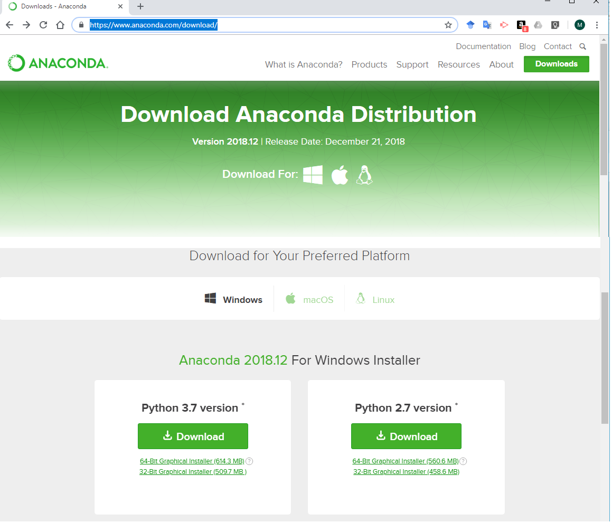
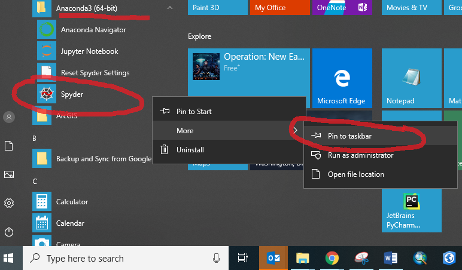

Setup and Getting Started
Why Python?
Civil engineers can do most of their work with a calculator, Excel, and specialized software, but sometimes analysis and design requires custom computer programming. Right now, and for the near future, experts agree that Python is the best programming language to learn for a wide variety of analysis and design tasks.
Python is…
one of the easiest computer languages to learn,
similar to other languages and can be a stepping stone to others if desired,
very fast and powerful for data analysis and solving engineering problems,
easy to share and collaborate with team members,
used by most big tech companies, including Google, Facebook, and Netflix,
easily integrated with other software, including Excel, ArcGIS, and VISSIM, and
has thousands of extra “packages” that people are continually improving and providing for free on the internet.
If you do a Google search for best computer languages, you will find Python is often ranked number one or least in the top five. If you focus your search on computer languages for science, math, engineering, and data analysis, then Python is king. Various organizations publish annual rankings of computer languages. google search best computer languages.
What is Python?
There are lots of computer languages. New languages are being created by smart computer scientists every year. The first “modern” language was simply called “C”. The reason is because in 1972 the guys at Bell Labs who invented it had previously created a language that they called “A” and then they created something better that they called “B”. When they got to “C” it was so good they stopped trying to improve it. C became the main programming language for many years and continues to be a leading language.
Improvements were eventually made to C and became distinct languages such as C++ and C#. Other languages are Fortran, Java, PHP, R, GO, and Pearl. Computer languages differ in syntax and vocabulary, just like spoken languages. For example in English adjectives go before the noun, while in Spanish the adjective comes after the noun. Computer scientists create new languages to make them faster, more efficient, or easier to use. One way to categorize computer languages is by programming method . Some languages are better than others for a particular programming method. For example SQL is really good for Declarative programming. C# is really good for Object-oriented programming.
Programming Method |
Characteristics |
|---|---|
Procedural programming |
follows a procedure (also called a routine or a script) |
Functional programming |
can call functions stored in other parts of the code |
Declarative programming |
can efficiently query databases |
Object-oriented programming |
uses objects called classes |
A computer scientist named Guido van Rossum wanted to create a computer language that could efficiently be used with all these programming methods. More importantly he wanted the language to be easy to read and write. In 1991 he released Python, which he named after Monty Python the comedy TV show and movie series.

How do I install Python?
There are many versions of Python, many ways to install it, and many many add-in extra “modules” or “packages” (also called libraries in other computer languages) that can be additionally installed.
Save yourself a huge headache and simply install the “Anaconda Distribution” with the lastest version of Python. The Anaconda installation will include all the best packages, a great code editor called Spyder, and other tools for easily adding and updating packages.
https://www.anaconda.com/download
Note
There were significant changes from Python version 2.7 to Python 3. Consequently, the Anaconda people still make Python 2.7 available for legacy applications that some people might be using still. You should install the newest version, which is currently Python 3.7.
How do I get started?
There are many ways to interact with Python once it has been installed. The best way is to use an IDE (Integrated Development Environment) such as Spyder, IDLE, or PyCharm. The Anaconda Distribution includes Spyder.
I recommend you pin Spyder to your taskbar for easy access. Naviagate to the Anaconda folder, right click on the Spyder program, click More, and click Pin to taskbar.
When you first open Spyder it should look something like the image shown below. The layout in Spyder is completely customizable, which means you can close, open, and rearrange the windows how you please. I recommend the default layout with the three windows (calle panes) shown below.

The first window pane is the Editor where you will write code that can be saved and used later. The second window pane is the Console where you can also write code, but it is not saved. Code written in the Editor and code written in the Console is output to the Console. The Console is also called the Interpreter. The third window pane is where you can read help files and explore the data that you are using.
I recommend that today and throughout your learning that you explore the Spyder GUI (graphical user interface), i.e. close and move windows, push different buttons and menus, etc. Don’t worry, you won’t break it. And you can always put everything back to normal by going to Tools/Reset Spyder to factory defaults. For example, some people like to have certain panes on or off, which can be done at View/Panes.
Write your first computer program
Begin by typing in the Console a = 5. Hit enter.
Now write b = 6 and hit enter again.
The variables a and b are now stored in your computer. You can see this by looking at the Variable explorer in
the upper right pane. Now write a + b and hit enter to see how Python can be used as calculator.

Note
The Spyder console uses a format called IPython that looks like this:

The IPython input prompt is In [ ] and numbered consecutively. Likewise, output is preceded with Out [ ]
and the corresponding number.
The original Python prompt, which can be seen if you use IDLE to write code, uses three arrows >>> for input
and shows nothing before output.
Like this:

“The” official Python Tutorial begins its introduction by showing how the Console (also called the Interpreter) can be used as a calculator. See An Informal Introduction to Python
Indeed the Console can be useful for quick calculations or to check output. But for long procedures (i.e. multiple calculations in a sequence) it is better to use the Editor. The Editor allows you to save the code as a “script” and re-run the script later. Furthermore, if you only use the Console, then once you close Spyder all the variables will be lost.
Now write your first program in the Editor. Write a = 500 and b = 600 as shown below. This is a program and doesn’t do anything until we Run the
program. Also, write print(a + b). And, for fun, also write print("Hello World") (There is a tradition in
computer programming that your first program should say “Hello World”.) To run your program, hit the
green play button. You will first need to save your script. For my course CE 215, you will put scripts in your U: drive folder
CE215/Python. Name the file with your last name, the word Practice, and the lab number (all separated by underscores).
The script will automatically be given a .py extension. So this first program file will be: Lastname_Practice_1.1.py
The output from running your script will be shown in the Console. You can check the values of a and b in the
Variable Editor.
Note
This is called a “script” or a “program” just like when you go to the theater and the actors
follow the sequential lines of their script and the play follows the program. Python reads each line of the program from from top to bottom
. When using the console we could simply write a + b to print the result. However, when using a script we need to
explicitly say when to do something. print() is how we tell the script to print something to the console.
Now what? How to use this website and where to get help.
This website is not intended to be a tutorial with step by step exercises (that happens in class), instead it is intended to be a reference for past and current students and anyone else interested in Python. That said, if you are new to Python, then you should consider clicking through each page in order. This website follows a typical sequence found in most textbooks and online tutorials. If you are stuck on a topic, then search online and you will probably find at least a dozen other websites trying to explain the exact same thing.
Here is a list of websites you should go check out for more information (These will likely come up as you search the internet for help in the future).
Website |
Description |
|---|---|
The official tutorial by the people in charge. |
|
Where anything you could ever ask has already been answered. |
|
Where people share code and data. Many Python packages/modules are here. |
|
An important style guide from the people in charge. |
|
Another style guide I try to follow and you should also. |
|
Essential package for science and engineering, for creating plots. |
|
Essential package for science and engineering, for creating arrays. |
|
Essential package for science and engineering, for creating dataframes. |
|
Essential package for science and engineering, for mathematical analysis. |
|
Essential package for science and engineering, for statistical analysis. |
|
The GIS-focused version of Stack Overflow. |
Tip
To copy code blocks from this website, click >>> in the upper right corner. Then, select the code and hit
Ctrl c to copy. Then, in the Spyder Console or Editor place your cursor and hit Ctrl v to paste. In some examples on this website print() is not included, so
if you are pasting into the Editor, you may need to add print() to explicitly print something to the console.